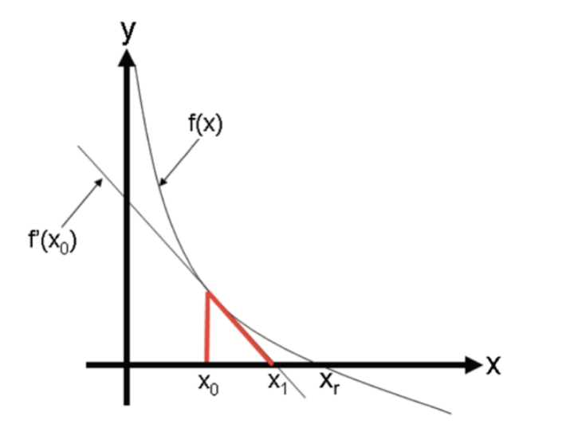
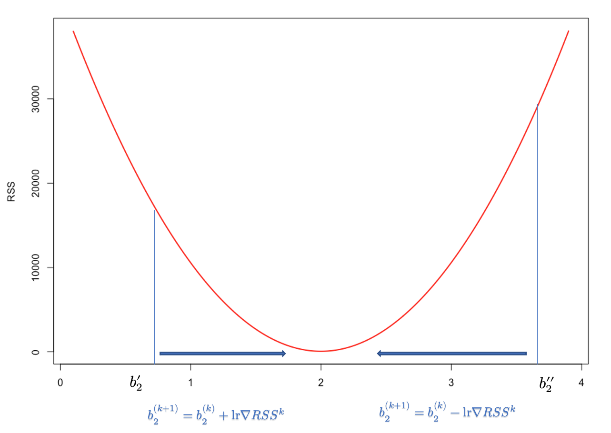

Chapter 38 Algorithmic Optimization
Here is a definition of algorithmic optimization from Wikipedia:
An optimization algorithm is a procedure which is executed iteratively by comparing various solutions until an optimum or a satisfactory solution is found. Optimization algorithms help us to minimize or maximize an objective function \(F(x)\) with respect to the internal parameters of a model mapping a set of predictors (\(X\)) to target values(\(Y\)). There are three types of optimization algorithms which are widely used; Zero-Order Algorithms, First-Order Optimization Algorithms, and Second-Order Optimization Algorithms. Zero-order (or derivative-free) algorithms use only the criterion value at some positions. It is popular when the gradient and Hessian information are difficult to obtain, e.g., no explicit function forms are given. First Order Optimization Algorithms minimize or maximize a Loss function \(F(x)\) using its Gradient values with respect to the parameters. Most widely used First order optimization algorithm is Gradient Descent. The First order derivative displays whether the function is decreasing or increasing at a particular point.
In this appendix, we will review some important concepts in algorithmic optimization.
38.1 Brute-force optimization
Let’s look at a simplified example about optimal retirement-plan and solve it with a zero-order algorithm.
Suppose that there are 2 groups of workers who are planning for their retirement at the age of 65. Both consider spending 40,000 dollars each year for the rest of their lives after retirement. On average, people in both groups expect to live 20 more years after retirement with some uncertainty. The people in the first group (A) have the following risk profile: 85% chance to live 20 years and 15% chance to live 30 years. The same risk profile for the people in the second group (B) is: 99% for 20 years and 1% for 30 years. Suppose that in each group, their utility (objective) function is \(U=C^{0.5}\).
What’s the maximum premium (lump-sum payment) that a person in each group would be willing to pay for a life-time annuity of 40K?
Without a pension plan, people in each group have the following utilities:
#For people in group A
U_A = 0.85*sqrt(40000*20) + 0.15*sqrt(10*0)
U_A## [1] 760.2631#For people in group B
U_B = 0.99*sqrt(40000*20) + 0.01*sqrt(10*0)
U_B## [1] 885.4829For example, they would not pay 200,000 dollars to cover their retirement because that would make them worse than their current situation (without a pension plan).
#For people in group A
U_A = 0.85*sqrt(40000*20 - 200000) + 0.15*sqrt(40000*10 - 200000)
U_A## [1] 725.4892#For people in group B
U_B = 0.99*sqrt(40000*20 - 200000) + 0.01*sqrt(40000*10 - 200000)
U_B## [1] 771.3228Hence, the payment they would be willing to make for reduction in uncertainty during their retirement should not make them worse off. Or more technically, their utility should not be lower than their current utility levels. Therefore Pmax, the maximum premium that a person would be willing to pay, can be found by minimizing the following cost function for people, for example, in Group A:
\[ f(Pmax) = p \times \sqrt{40000 \times 20~\text{years}-Pmax}+ \\ (1-p) \times \sqrt{40000 \times 10~ \text{years}-Pmax} - p \times \sqrt{ 40000 \times 20~\text{years}} \]
Here is the iteration to solve for Pmax for people in Group A. We created a cost function, costf, that we try to minimize. Change the parameters to play with it. The same algorithm can be used to find Pmax for people in Group B.
library(stats)
p <- 0.85
w1 <- 800000
w2 <- 400000
converged = F
iterations = 0
maxiter <- 600000
learnrate <- 0.5
Pmax <- 10000
while(converged == FALSE){
costf <- p*sqrt(w1 - Pmax) + (1 - p)*sqrt(w2 - Pmax) - p*sqrt(w1)
if(costf > 0){
Pmax <- Pmax + learnrate
iterations = iterations + 1
if(iterations > maxiter) {
print("It cannot converge before finding the optimal Pmax")
break
}
converged = FALSE
}else{
converged = TRUE
print(paste("Maximum Premium:",
Pmax, "achieved with",
iterations, "iterations"))
}
}## [1] "Maximum Premium: 150043 achieved with 280086 iterations"#let's verify it by `uniroot()` which finds the roots for f(x) = 0
costf <- function(x){
p * sqrt(800000 - x) +
(1-p) * sqrt(400000 - x) -
p*sqrt(800000)
}
paste("Unitroot for f(x) = 0 is ",
uniroot(costf, c(10000, 200000))$root)## [1] "Unitroot for f(x) = 0 is 150042.524874307"There are better functions that we could use for this purpose, but this example works well for our experiment.
There several of important parameters in our algorithm. The first one is the starting Pmax, which can be set up manually. If the starting value is too low, iteration could not converge. If it’s too high, it can give us an error. Another issue is that our iteration does not know if the learning rate should increase or decrease when the starting value is too high or too low. This can be done with additional lines of code, but we will not address it here.
This situation leads us to the learning rate: the incremental change in the value of the parameter. This parameter should be conditioned on the value of cost function. If the cost function for a given Pmax is negative, for example, the learning rate should be negative. Secondly, the number of maximum iterations must be set properly, otherwise the algorithm may not converge or take too long to converge. In the next section, we will address these issues with a smarter algorithm.
There are other types of approaches. For example, the algorithm may create a grid of Pmax and then try all the possible values to see which one approximately makes the cost function minimum.
38.2 Derivative-based methods
One of the derivative-based methods is the Newton-Raphson method. If we assume that the function is differentiable and has only one minimum (maximum), we can develop an optimization algorithm that looks for the point in parameter space where the derivative of the function is zero. There are other methods, like Fisher Scoring and Iteratively Reweighted Least Squares, that we will not see here.
First, let’s see the Newton-Raphson method. This is a well-known extension of your calculus class about derivatives in High School. The method is very simple and used to find the roots of \(f(x)=0\) by iterations. In first-year computer science courses, this method is used to teach loop algorithms that calculate the value of, for example, \(e^{0.71}\) or \(\sqrt{12}\). It is a simple iteration that converges in a few steps.
\[ x_{n+1}=x_{n}-\frac{f\left(x_{n}\right)}{f^{\prime}\left(x_{n}\right)} \] To understand it, let’s look at the function \(y=f(x)\) shown in the following graph:

It has a zero at \(x=x_r\), which is not known. To find it, we start with \(x_0\) as an initial estimate of \(X_r\). The tangent line to the graph at the point \(\left(x_0, f\left(x_0\right)\right)\) has the point \(x_1\) at which the tangent crosses the \(x\)-axis. The slope of this line can be defined as
\[ \frac{y-f\left(x_0\right)}{x-x_0}=f^{\prime}\left(x_0\right) \] Hence,
\[ y-f\left(x_0\right)=f^{\prime}\left(x_0\right)\left(x-x_0\right) \] At the point where the tangent line cross the \(x\)-axis, \(y=0\) and \(x=x_1\). Hence solving the equation for \(x_1\), we get
\[ x_{1}=x_{0}-\frac{f\left(x_{0}\right)}{f^{\prime}\left(x_{0}\right)} \] And the second approximations:
\[ x_{2}=x_{1}-\frac{f\left(x_{1}\right)}{f^{\prime}\left(x_{1}\right)} \] And with multiple iterations one can find the solution. Here is the example:
newton <- function(f, x0, tol = 1e-5, n = 1000) {
require(numDeriv) # Package for computing f'(x)
for (i in 1:n) {
dx <- genD(func = f, x = x0)$D[1] # First-order derivative f'(x0)
x1 <- x0 - (f(x0) / dx) # Calculate next value x1
if (abs(x1 - x0) < tol) {
res <- paste("Root approximation is ", x1, " in ", i, " iterations")
return(res)
}
# If Newton-Raphson has not yet reached convergence set x1 as x0 and continue
x0 <- x1
}
print('Too many iterations in method')
}
func2 <- function(x) {
x^15 - 2
}
newton(func2, 1)## [1] "Root approximation is 1.04729412282063 in 5 iterations"#Check it
paste("Calculator result: ", 2^(1/15))## [1] "Calculator result: 1.04729412282063"Newton’s method is often used to solve two different, but related, problems:
- Finding \(x\) such that \(f(x)=0\) (try to solve our insurance problem with this method)
- Finding \(x\) that \(g'(x)=0\), or find \(x\) that minimizes/maximizes \(g(x)\).
The relation between these two problems is obvious when we define \(f(x) = g'(x)\). Hence, for the second problem, the Newton-Raphson method becomes:
\[ x_{n+1}=x_{n}-\frac{g^{\prime}\left(x_{n}\right)}{g^{\prime \prime}\left(x_{n}\right)} \]
Connection between these two problems are defined in this post (Gulzar_2018?) very nicely.
Let’s pretend that we are interested in determining the parameters of a random variable \(X \sim N(\mu, \sigma^{2})\). Here is the log-likelihood function for \(X\):
\[ \log (\mathcal{L}(\mu, \sigma))=-\frac{n}{2} \log \left(2 \pi \sigma^{2}\right)-\frac{1}{2 \sigma^{2}} \sum_{i=1}^{n}\left(x_{i}-\mu\right)^{2} \]
We have seen it in Chapter 2 before. But this time we will use dnorm() which calculates the pdf of a normal variable. First let’s have the data and the log-likelihood:
# Let's create a sample of normal variables
set.seed(2019)
X <- rnorm(100, 0, 1)
# And the log-likelihood of this function.
# Remember likelihood function would be prod(dnorm()) with log=F
normalLL <- function(prmt){
sum(dnorm(X, mean = prmt[1], sd = prmt[2], log = TRUE))
}
# Let's try several parameters
normalLL(prmt = c(1,1.5))## [1] -176.078normalLL(prmt = c(2,1))## [1] -347.4119normalLL(prmt = c(mean(X),sd(X)))## [1] -131.4619As you can see, the last one is the best. And we can verify it because we had created \(X\) with 0 mean and 1 sd, approximately. Now we will use the Newton-Raphson method to calculate those parameters that minimize the negative log-likelihood.
First, let’s build a function that estimates the slope of the function (first-derivative) numerically at any arbitrary point in parameter space for mean and sd, separately. Don’t forget, the log-likelihood is a function of parameters (mean and sd) not X.
# First partial (numerical) derivative w.r.t. mean
firstM <- function(p1, p2, change = 0.0001){
prmt <- c(p1, p2)
high <- normalLL(prmt + c(change,0))
low <- normalLL(prmt - c(change,0))
slope <- (high-low)/(change*2)
return(slope)
}
firstM(mean(X), sd(X))## [1] 0# First partial (numerical) derivative w.r.t. sd
firstSD <- function(p1, p2, change = 0.0001){
prmt <- c(p1, p2)
high <- normalLL(prmt + c(0, change))
low <- normalLL(prmt - c(0, change))
slope <- (high-low)/(change*2)
return(slope)
}
firstSD(mean(X), sd(X))## [1] -1.104417#Verify them with the grad()
library(numDeriv)
f <- function(x) {
a <- x[1]; b <- x[2]
sum(dnorm(X, mean = a, sd = b, log = TRUE))
}
grad(f,c(mean(X),sd(X)))[1]## [1] 0grad(f,c(mean(X),sd(X)))[2]## [1] -1.104419# Or better
round(jacobian(f,c(mean(X),sd(X))), 4) #First derivatives## [,1] [,2]
## [1,] 0 -1.1044round(hessian(f,c(mean(X),sd(X))), 4) #Second derivatives## [,1] [,2]
## [1,] -121.9741 0.000
## [2,] 0.0000 -240.289Let’s try them now in the Newton-Raphson method.
\[ x_{n+1}=x_{n}-\frac{g^{\prime}\left(x_{n}\right)}{g^{\prime \prime}\left(x_{n}\right)} \]
Similar to the first one, we can also develop a function that calculates the second derivatives. However, instead of using our own functions, let’s use grad() and hessian() from the numDeriv package.
set.seed(2019)
X <- rnorm(100, 2, 2)
NR <- function(f, x0, y0, tol = 1e-5, n = 1000) {
for (i in 1:n) {
dx <- grad(f,c(x0, y0))[1] # First-order derivative f'(x0)
ddx <- hessian(f,c(x0, y0))[1,1] # Second-order derivative f''(x0)
x1 <- x0 - (dx / ddx) # Calculate next value x1
if (abs(x1 - x0) < tol) {
res <- paste("The mean approximation is ", x1, " in ", i, " iterations")
return(res)
}
# If Newton-Raphson has not yet reached convergence set x1 as x0 and continue
x0 <- x1
}
print('Too many iterations in method')
}
func <- function(x) {
a <- x[1]; b <- x[2]
sum(dnorm(X, mean = a, sd = b, log = TRUE))
}
NR(func, -3, 1.5)## [1] "The mean approximation is 1.85333200308383 in 2 iterations"#Let;s verify it
mean(X)## [1] 1.853332Finding sd is left to the practice questions. But the way to do it should be obvious. Use our approximation of the mean (1.853332) as a fixed parameter in the function and run the same algorithm for finding sd. When the power of computers and the genius of mathematics intercepts, beautiful magics happen.
38.3 ML Estimation with logistic regression
The pdf of Bernoulli distribution is
\[ P(Y=y)=p^y(1-p)^{1-y} \] It’s likelihood
\[ \begin{aligned} L(\boldsymbol{\beta} \mid \mathbf{y} ; \mathbf{x}) &=L\left(\beta_0, \beta_1 \mid\left(y_1, \ldots, y_n\right) ;\left(x_1, \ldots, x_n\right)\right) \\ &=\prod_{i=1}^n p_i^{y_i}\left(1-p_i\right)^{1-y_i} \end{aligned} \] And log-likelihood
\[ \begin{aligned} \ell(\boldsymbol{\beta} \mid \mathbf{y} ; \mathbf{x}) &=\log \left(\prod_{i=1}^n p_i^{y_i}\left(1-p_i\right)^{1-y_i}\right) \\ &=\sum_{i=1}^n\left( \log \left(p_i^{y_i}\right)+\log \left(1-p_i\right)^{1-y_i}\right) \\ &=\sum_{i=1}^n y_i \left(\log \left(p_i\right)+\left(1-y_i\right) \log \left(1-p_i\right)\right) \end{aligned} \] where
\[ \begin{aligned} \operatorname{L}\left(p_i\right) &=\log \left(\frac{p_i}{1-p_i}\right) \\ &=\beta_0+\beta_1 x_1 \end{aligned} \]
So,
\[ p_i=\frac{\exp \left(\beta_0+x_1 \beta_1\right)}{1+\exp \left(\beta_0+x_1 \beta_1\right)} \] First partial derivative with respect to \(\beta_0\) \[ \begin{aligned} \frac{\partial p_i}{\partial \beta_0} &=\frac{\exp \left(\beta_0+x_1 \beta_1\right)}{\left(1+\exp \left(\beta_0+x_1 \beta_1\right)\right)^2} \\ &=p_i\left(1-p_i\right) \end{aligned} \] And
\[ \begin{aligned} \frac{\partial p_i}{\partial \beta_1} &=\frac{x_1 \exp \left(\beta_0+x_1 \beta_1\right)}{\left(1+\exp \left(\beta_0+x_1 \beta_1\right)\right)^2} \\ &=x_1 p_i\left(1-p_i\right) \end{aligned} \] Newton-Raphson’s equation is
\[ \boldsymbol{\beta}^{(t+1)}=\boldsymbol{\beta}^{(t)}-\left(\boldsymbol{H}^{(t)}\right)^{-1} \boldsymbol{u}^{(t)}, \]
where
\[ \boldsymbol{\beta}^{(t)}=\left[\begin{array}{c} \beta_0^{(t)} \\ \beta_1^{(t)} \end{array}\right] \]
\[ \boldsymbol{u}^{(t)}=\left[\begin{array}{c} u_0^{(t)} \\ u_1^{(t)} \end{array}\right]=\left[\begin{array}{c} \frac{\partial \ell\left(\beta^{(t)} \mid y ; x\right)}{\partial \beta_0} \\ \frac{\partial \ell\left(\beta^{(t)} \mid y ; x\right)}{\partial \beta_1} \end{array}\right]=\left[\begin{array}{c} \sum_{i=1}^n \left(y_i-p_i^{(t)}\right) \\ \sum_{i=1}^n x_i\left(y_i-p_i^{(t)}\right) \end{array}\right] \] where,
\[ p_i^{(t)}=\frac{\exp \left(\beta_0^{(t)}+x_1 \beta_1^{(t)}\right)}{1+\exp \left(\beta_0^{(t)}+x_1 \beta_1^{(t)}\right)} \]
\(\boldsymbol{H}^{(t)}\) can be considered as Jacobian matrix of \(\boldsymbol{u}(\cdot)\),
\[ \boldsymbol{H}^{(t)}=\left[\begin{array}{ll} \frac{\partial u_0^{(t)}}{\partial \beta_0} & \frac{\partial u_0^{(t)}}{\partial \beta_1} \\ \frac{\partial u_1^{(t)}}{\partial \beta_0} & \frac{\partial u_1^{(t)}}{\partial \beta_1} \end{array}\right] \] Let’s simulate data and solve it the Newton-Raphson’s method described above.
rm(list=ls())
#Simulating data
set.seed(1)
n <- 500
X = rnorm(n) # this is our x
z = -2 + 3 * X
#Prob. is defined by logistic function
p = 1 / (1 + exp(-z))
#Bernoulli is the special case of the binomial distribution with size = 1
y = rbinom(n, size = 1, prob = p)
#And we create our data
df <- data.frame(y, X)
head(df)## y X
## 1 0 -0.6264538
## 2 0 0.1836433
## 3 0 -0.8356286
## 4 0 1.5952808
## 5 0 0.3295078
## 6 0 -0.8204684logis <- glm(y ~ X, data = df, family = binomial)
summary(logis)##
## Call:
## glm(formula = y ~ X, family = binomial, data = df)
##
## Deviance Residuals:
## Min 1Q Median 3Q Max
## -2.3813 -0.4785 -0.2096 0.2988 2.4274
##
## Coefficients:
## Estimate Std. Error z value Pr(>|z|)
## (Intercept) -1.8253 0.1867 -9.776 <2e-16 ***
## X 2.7809 0.2615 10.635 <2e-16 ***
## ---
## Signif. codes: 0 '***' 0.001 '**' 0.01 '*' 0.05 '.' 0.1 ' ' 1
##
## (Dispersion parameter for binomial family taken to be 1)
##
## Null deviance: 605.69 on 499 degrees of freedom
## Residual deviance: 328.13 on 498 degrees of freedom
## AIC: 332.13
##
## Number of Fisher Scoring iterations: 6library(numDeriv)
func_u <- function(b) {
c(sum(df$y - exp(b[1] + b[2] * df$X)/ (1 + exp(b[1] + b[2] * df$X))),
sum(df$X * (df$y - exp(b[1] + b[2] * df$X)/ (1 + exp(b[1] + b[2] * df$X)))))
}
# Starting points
delta <- matrix(1:2, nrow = 2) # starting delta container (with any number > 0)
b <- array(c(-2,3))
while(abs(sum(delta)) > 0.0001){
B <- b #current b
b <- as.matrix(b) - solve(jacobian(func_u, x = b)) %*% func_u(b) #new b
delta <- b - as.matrix(B)
}
b## [,1]
## [1,] -1.825347
## [2,] 2.78092938.4 Gradient Descent Algorithm
Let’s start with a regression problem. The cost function in OLS is the residual sum of squares, \(\mathrm{RSS}=\sum_{i=1}^n\left(\widehat{e}_i\right)^2=\sum_{i=1}^n\left(y_i-\hat{y}\right)^2=\sum_{i=1}^n\left(y_i-\left(b_1+b_2 x_i\right)\right)^2\), which is a convex function. Our objective to find \(b_1\) and \(b_2\) that minimize RSS. How can we find those parameters to minimize a cost function if we don’t know much about it? The trick is to start with some point and move a bit (locally) in the direction that reduces the value of the cost function. In general, this search process for finding the minimizing point has two components: the direction and the step size. The direction tells us which direction we move next, and the step size determines how far we move in that direction. For example, the iterative search for \(b_2\) of gradient descent can be described by the following recursive rule:
\[ b_2^{(k+1)}=b_2^{(k)}-lr \nabla RSS^{k} \] Here, \(lr\) is learning rate and \(\nabla RSS^{k}\) is the slope of RSS at step \(k\). Hence, \(lr \nabla RSS^{k}\) is the total step size at step \(k\). Note that, as we move from either directions towards \(b^*_2\), \(\nabla RSS^{k}\) gets smaller. In fact, it becomes zero at \(b^*_2\). Therefore, \(\nabla RSS^{k}\) helps iterations find the proper adjustment in each step in terms of direction and magnitude. Since RSS is a convex function, it’s easy to see how sign of \(\nabla RSS^{k}\) will direct the arbitrary \(b_2^{''}\) towards the optimal \(b_2\).

Since first-order approximation at \(b_2^{''}\) is good only for small \(\Delta b_2\), a small \(lr>0\) is needed to o make \(\Delta b_2\) small in magnitude. Moreover, when a high learning rate used it leads to “overshooting” past the local minima and may result in diverging algorithm.
Below, we first use a simple linear regression function on simulated data and estimate its parameters with lm(). Let’s simulate a sample with our DGM.
set.seed(1001)
N <- 100
int <- rep(1, N)
x1 <- rnorm(N, mean = 10, sd = 2)
Y <- rnorm(N, 2*x1 + int, 1)
model <- lm(Y ~ x1)
b <- coef(model)
b## (Intercept) x1
## 1.209597 1.979643plot(x1, Y, col = "blue", pch = 20)
abline(b)
The cost function that we want to minimize is
\[ y_i = 1 + 2x_i + \epsilon_i \\ RSS = \sum{\epsilon_i^2}=\sum{(y_i-1-2x_i)^2} \] And, its plot for a range of coefficients is already shown earlier.
38.4.1 One-variable
Below, we create a function, grdescent, to show how sensitive gradient descent algorithms would be to different calibrations:
grdescent <- function(x, y, lr, thresh, maxiter) {
#starting points
set.seed(234)
b <- runif(1, 0, 1)
c <- runif(1, 0, 1)
n <- length(x)
#function
yhat <- c + b * x
#gradient
MSE <- sum((y - yhat) ^ 2) / n
converged = F
iterations = 0
#while loop
while (converged == F) {
b_new <- b - ((lr * (1 / n)) * (sum((y - yhat) * x * (-1))))
c_new <- c - ((lr * (1 / n)) * (sum(y - yhat) * (-1)))
b <- b_new
c <- c_new
yhat <- b * x + c
MSE_new <- sum((y - yhat) ^ 2) / n
if (abs(MSE - MSE_new) <= thresh) {
converged = T
return(paste("Intercept:", c, "Slope:", b))
}
iterations = iterations + 1
if (iterations > maxiter) {
converged = T
return(paste("Max. iter. reached, ", "Intercept:",
c, "Slope:", b))
}
}
}Note that the key part in this algorithm is b_new <- b + (learnrate * (1 / n)) * sum((y - yhat) * x*(-1).
The first \(b\) that is picked randomly by b <- runif(1, 0, 1) is adjusted by learnrate * (1 / n) * (sum((y - yhat) * -x)).
Note that sum((y - yhat) * x) is the first order condition of the cost function (RSS - Residual Sum of Squares) for the slope coefficient. The cost function (RSS) is a convex function where the minimum can be achieved by the optimal \(b\). It is a linear Taylor approximation of RSS at \(b\) that provides the steepest descent, that is just a simple adjustment for identifying the direction of the adjustment of \(b\) until the minimum RSS is reached.
Now we will see if this function will give us the same intercept and slope coefficients already calculated with lm() above.
grdescent(x1, Y, 0.003, 0.001, 1000000) # Perfect## [1] "Max. iter. reached, Intercept: 1.20959654028984 Slope: 1.97964316494708"This is good. But, if start a very low number with a small learning rate, then we need more iteration
grdescent(x1, Y, 0.00004, 0.001, 4000000)## [1] "Max. iter. reached, Intercept: 1.20947317953422 Slope: 1.97965489994805"Yes, the main question is how do we find out what the learning rate should be? It is an active research question and to answer it is beyond this chapter. A general suggestion, however, is to keep it small and tune it within the training process.
38.4.2 Multivariable
We will expand the gradient descent algorithms with an multivariable example using matrix algebra. First, the data and model simulation:
set.seed(1001)
N <- 100
int <- rep(1, N)
x1 <- rnorm(N, mean = 10, sd = 2)
x2 <- rnorm(N, mean = 5, sd = 1)
x3 <- rbinom(N, 1, 0.5)
x4 <- rbinom(N, 1, 0.5)
x5 <- rbinom(N, 1, 0.5)
x6 <- rnorm(N, 1, 0.25)
x7 <- rnorm(N, 1, 0.2)
x2x3 <- x2*x3
x4x5 <- x4*x5
x4x6 <- x5*x6
x3x7 <- x3*x7
Y <- rnorm(N, 2*x1 + -0.5*x2 - 1.75*x2x3 + 2*x4x5 - 3*x4x6 + 1.2*x3x7 + int, 1)
X <- cbind(int, x1, x2, x2x3, x4x5, x4x6, x3x7)We can solve it with linear algebra manually:
betaOLS <- solve(t(X)%*%X)%*%t(X)%*%Y
print(betaOLS)## [,1]
## int 0.4953323
## x1 1.9559022
## x2 -0.3511182
## x2x3 -1.9112623
## x4x5 1.7424723
## x4x6 -2.8323934
## x3x7 2.1015442We can also solve it with lm()
model1.lm <- lm(Y ~ X -1)
summary(model1.lm)##
## Call:
## lm(formula = Y ~ X - 1)
##
## Residuals:
## Min 1Q Median 3Q Max
## -2.84941 -0.45289 -0.09686 0.57679 2.07154
##
## Coefficients:
## Estimate Std. Error t value Pr(>|t|)
## Xint 0.49533 0.75410 0.657 0.51290
## Xx1 1.95590 0.03868 50.571 < 2e-16 ***
## Xx2 -0.35112 0.12600 -2.787 0.00645 **
## Xx2x3 -1.91126 0.13358 -14.308 < 2e-16 ***
## Xx4x5 1.74247 0.24396 7.143 2.01e-10 ***
## Xx4x6 -2.83239 0.18831 -15.041 < 2e-16 ***
## Xx3x7 2.10154 0.64210 3.273 0.00149 **
## ---
## Signif. codes: 0 '***' 0.001 '**' 0.01 '*' 0.05 '.' 0.1 ' ' 1
##
## Residual standard error: 0.8448 on 93 degrees of freedom
## Multiple R-squared: 0.9972, Adjusted R-squared: 0.997
## F-statistic: 4677 on 7 and 93 DF, p-value: < 2.2e-16Now the function for gradient descent:
grdescentM <- function(x, y, lr, thresh, maxiter) {
set.seed(123)
b <- runif(ncol(x), 0, 1)
yhat <- x%*%b
e <- y - yhat
RSS <- t(e)%*%e
converged = F
iterations = 0
n <- length(y)
while(converged == F) {
b_new <- b - (lr*(1/n))*t(x)%*%(x%*%b - y)
b <- b_new
yhat <- x%*%b
e <- y - yhat
RSS_new <- t(e)%*%e
if(RSS - RSS_new <= thresh) {
converged = T
return(b)
}
iterations = iterations + 1
if(iterations > maxiter) {
converged = T
return(b)
}
}
}grdescentM(X, Y, 0.003, 0.001, 1000000) ## [,1]
## int 0.4953323
## x1 1.9559022
## x2 -0.3511182
## x2x3 -1.9112623
## x4x5 1.7424723
## x4x6 -2.8323934
## x3x7 2.101544238.5 Optimization with R
A good summary of tools for optimization in R given in this guide: Optimization and Mathematical Programming. There are many optimization methods, each of which would only be appropriate for specific cases. In choosing a numerical optimization method, we need to consider following points:
- We need to know if it is a constrained or unconstrained problem. For example, the MLE method is an unconstrained problem. Most regularization problems, like Lasso or Ridge, are constraint optimization problems.
- Do we know how the objective function is shaped a priori? MLE and OLS methods have well-known objective functions (Residual Sum of Squares and Log-Likelihood). Maximization and minimization problems can be used in both cases by flipping the sign of the objective function.
- Multivariate optimization problems are much harder than single-variable optimization problems. There is, however, a large set of available optimization methods for multivariate problems.
- In multivariate cases, the critical point is whether the objective function has available gradients. If only the objective function is available without gradient or Hessian, the Nelder-Mead algorithm is the most common method for numerical optimization. If gradients are available, the best and most used method is the gradient descent algorithm. We have seen its application for OLS. This method can be applied to MLE as well. It is also called a Steepest Descent Algorithm. In general, the gradient descent method has three types: Batch Gradient Descent, Stochastic Gradient Descent, and Mini-Batch Gradient Descent.
- If the gradient and Hessian are available, we can also use the Newton-Raphson Method. This is only possible if the dataset is not high-dimensional, as calculating the Hessian would otherwise be very expensive.
- Usually the Nelder-Mead method is slower than the Gradient Descent method.
Optim()uses the Nelder-Mead method, but the optimization method can be chosen in its arguments.
More details can be found in this educational slides. The most detailed and advance source is Numerical Recipes, which uses C++ and R.